Gids
Restaurants in Nijmegen
Bijgewerkt op
In het kort: Nijmegen heeft restaurants uit alle keukens, vooral in de binnenstad, op de Waalkade en in Oost en Bottendaal. Deze gids zet onze restauranttips op een rij: de beste restaurants in het centrum, per keuken (van Italiaans en Thais tot sushi en vegan) en per gelegenheid, zoals betaalbaar uit eten, met kinderen of exclusief dineren.
Nijmegen is een echte eetstad. In de binnenstad, op de Waalkade en in wijken als Oost en Bottendaal vind je restaurants uit alle hoeken van de wereld, van gezellige eetcafés tot sterrenrestaurants.
Op deze pagina staan al onze restaurantgidsen bij elkaar. Kies een keuken of een gelegenheid, en lees welke adressen wij aanraden.
De beste restaurants
Geen idee waar je zin in hebt? Begin met onze toplijst van de binnenstad, of kies voor een avond exclusief dineren.

De 10 Beste Restaurants in Nijmegen Centrum
Uit eten in Nijmegen centrum? Dit zijn de 10 beste restaurants in de oudste stad van Nederland, van gezellige bistro tot sterrenrestaurant.
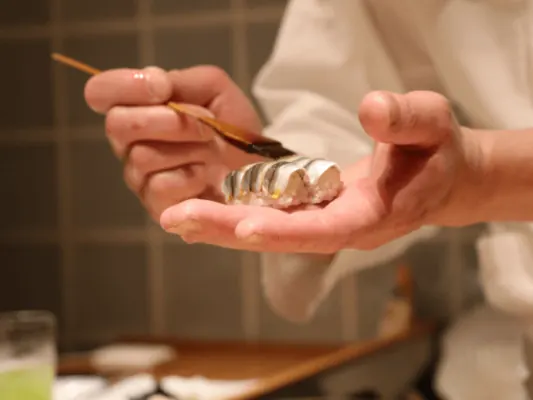
Exclusief dineren in Nijmegen, wat kan je verwachten?
Zin in een luxe avond uit? Lees waar je in Nijmegen exclusief kunt dineren, wat je mag verwachten en welke bijzondere restaurants de moeite waard zijn.
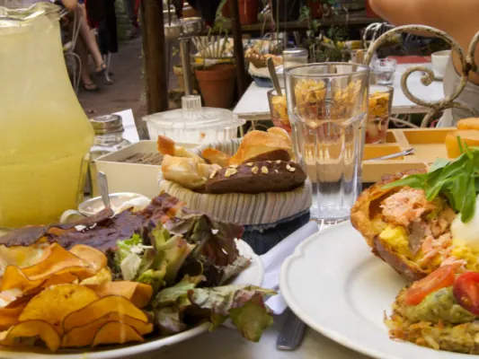
Hapje eten en drinken in Nijmegen
Een dagje Nijmegen? Hier eet en drink je lekker tussen het shoppen en wandelen door, van koffie en lunch tot borrel en diner.

Happen & Stappen in Nijmegen – Een Wereld aan Mogelijkheden
Wandelen en onderweg eten bij de beste restaurants: zo werkt happen en stappen in Nijmegen, met routes en tips.
Per keuken
Van pizza en pasta tot sushi, curry en mezze: dit zijn de beste adressen per keuken.
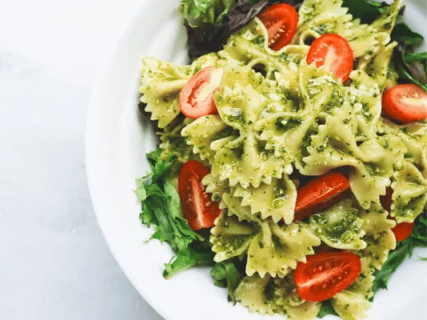
Culinair Genieten in Italiaanse Sfeer? Probeer Deze Restaurants
Zin in pasta of pizza? Dit zijn de beste Italiaanse restaurants in Nijmegen, van Merano tot de gezellige trattoria om de hoek.
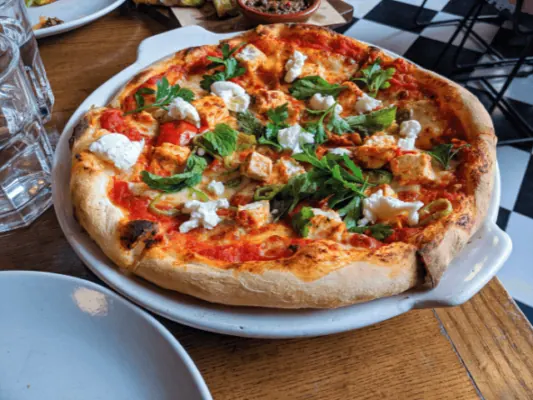
Pizza in Nijmegen: de beste pizzeria's
Op zoek naar de lekkerste pizza in Nijmegen? Dit zijn de beste pizzeria's in het centrum en daarbuiten, om ter plekke te eten of af te halen.
Thais eten in Nijmegen – Onze Top 3 Thaise restaurants
Zin in pad thai of een romige curry? Dit zijn de 3 beste Thaise restaurants in Nijmegen, van Siam Thai Palace tot BKK Thai.
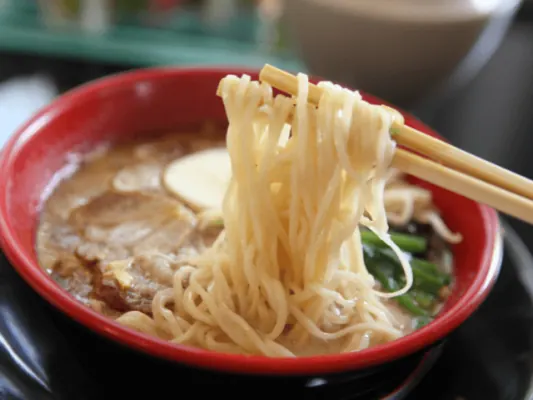
Sushi in Nijmegen: de beste Japanse restaurants
Zin in sushi? Dit zijn de beste Japanse restaurants in Nijmegen, van all you can eat tot sushi om af te halen.
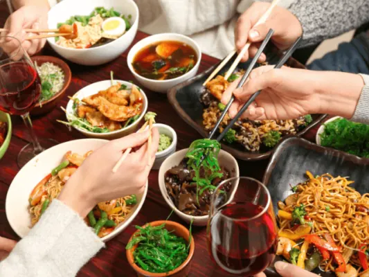
Laat je Culinair Verrassen in Chinese Sfeer
Zin in Chinees? Dit zijn de beste Chinese restaurants in Nijmegen, van vertrouwd Chinees-Indisch tot authentieke Chinese keuken.
Geniet van deze Aziatische Hoogstandjes in Nijmegen
Van curry tot noodles: dit zijn de beste Aziatische restaurants in Nijmegen, met keuze voor vegetariërs en vleeseters, in het centrum en daarbuiten.
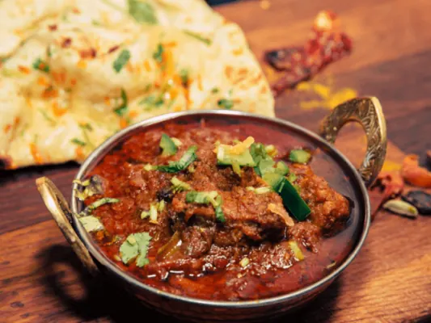
India’s culinaire parels: Toprestaurants in Nijmegen
Zin in curry, tandoori of naan? Dit zijn de beste Indiase restaurants in Nijmegen voor een kleurrijke en pittige avond uit.
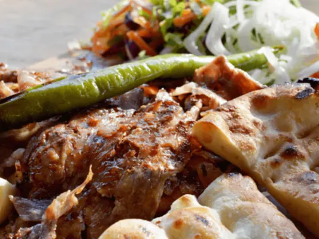
Heerlijke Turkse Specialiteiten in Nijmegen
Zin in köfte, pide of een Turks ontbijt? Dit zijn de beste Turkse restaurants en eettentjes in Nijmegen, van Serif Baba tot Mira.
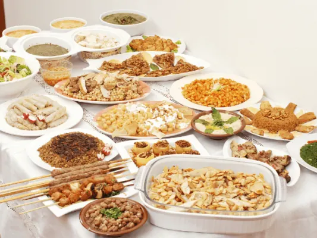
Op zoek naar een Nieuwe Belevenis? Probeer Libanees Eten
Zin in mezze, falafel of gegrild vlees op z'n Libanees? Dit zijn de beste Libanese restaurants in Nijmegen voor een verfijnde avond uit.
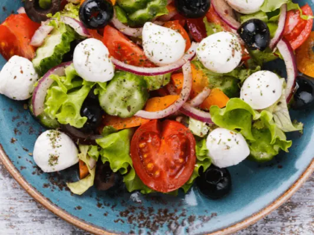
Op Culinaire Ontdekkingsreis? Probeer deze Griekse Restaurants
Zin in moussaka, gyros of tzatziki? Dit zijn de beste Griekse restaurants in Nijmegen, van Dionysos tot het gezellige familierestaurant.
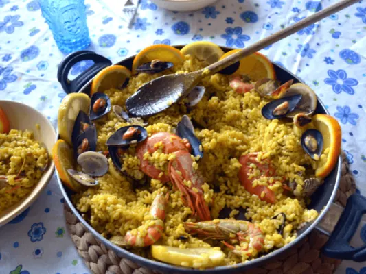
Op Zoek naar Iets Nieuws? Probeer Deze Spaanse Restaurants
Zin in paella of tapas? Dit zijn de beste Spaanse restaurants in Nijmegen voor een avond vol zuiderse smaken, met vrienden of familie.
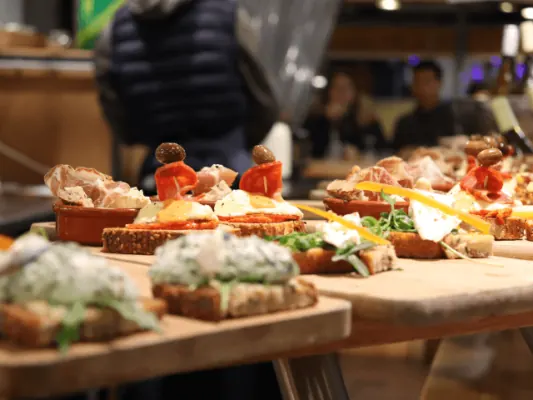
Tapas eten in Nijmegen, hier kan je dat doen!
Zin in tapas? Dit zijn de beste tapasrestaurants in Nijmegen, ook voor onbeperkt tapas met een groep vrienden of collega's.
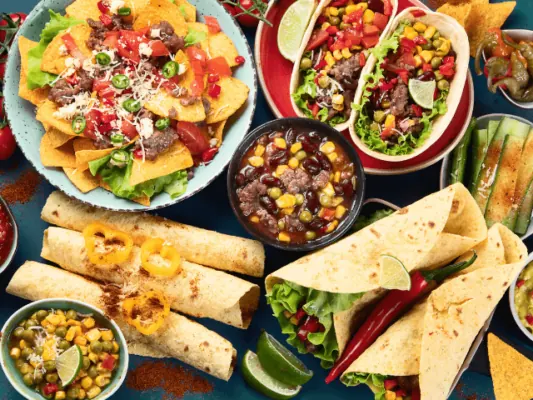
Mexicaans Genieten in Nijmegen – Dit Zijn de Beste Adresjes
Zin in taco's, burrito's of nacho's? Dit zijn de beste Mexicaanse restaurants in Nijmegen voor een avond vol pit.
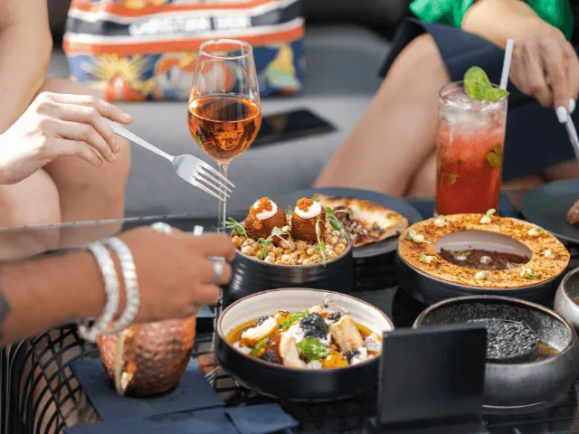
Ontdek de Franse Keuken in Nijmegen
Zin in de Franse keuken? Dit zijn de beste Franse restaurants en bistro's in Nijmegen, van klassiek tot modern.
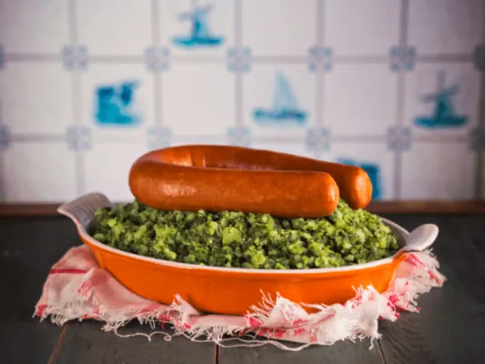
Geniet van de Hollandse Pot in Deze Nederlandse Restaurants in Nijmegen
Zin in stamppot, draadjesvlees of een goede schnitzel? Dit zijn de leukste restaurants met Hollandse kost in Nijmegen.
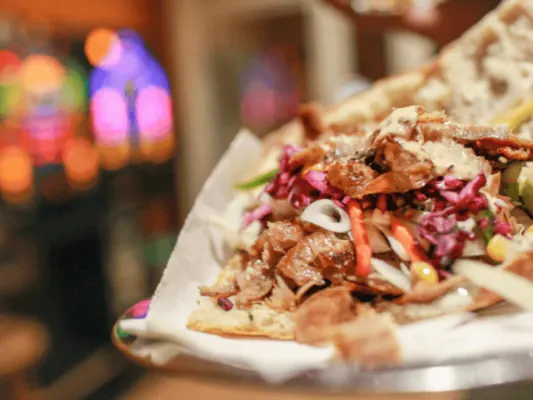
Zin in een Broodje Shoarma? Bezoek Deze Tentjes in Nijmegen
Zin in een broodje shoarma of een kebabschotel? Dit zijn de lekkerste shoarmazaken in Nijmegen, voor na het stappen of gewoon tussendoor.
Per gelegenheid
Lunchen tijdens een dagje stad, een high tea met vriendinnen of uit eten met de kinderen: hier vind je de plekken die daar het best bij passen.

Lekker lunchen in Nijmegen, dit zijn de beste plekjes
Een dagje Nijmegen? Dit zijn de beste plekken om te lunchen in de binnenstad, van een snelle broodjeszaak tot uitgebreid lunchen met vrienden.

Op zoek naar de beste high tea locaties in Nijmegen? 5 tips!
Zin in een high tea? Dit zijn de 5 beste high tea locaties in Nijmegen, met zoete en hartige lekkernijen voor een gezellige middag.

Droom je van een high wine in Nijmegen? Dit zijn de 5 mooiste locaties
Zin in een high wine in Nijmegen? Dit zijn de 5 mooiste plekken voor wijn met bijpassende hapjes, ideaal met vriendinnen of collega's.

Uit eten met kinderen in Nijmegen? Deze locaties mag je niet missen
Uit eten met kleine kinderen? Dit zijn de leukste kindvriendelijke restaurants in Nijmegen, met speelhoek, kindermenu of buitenruimte.
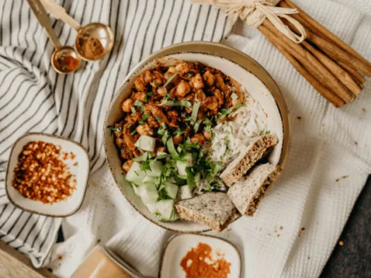
Waar kun je het best vegan uit eten in Nijmegen?
Veganistisch uit eten in Nijmegen? Dit zijn de beste vegan restaurants en plekken met een ruime plantaardige kaart, ook voor lunch.
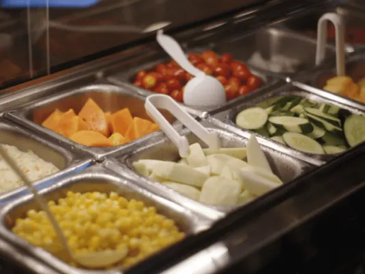
All you can eat in Nijmegen: de beste restaurants
Onbeperkt eten in Nijmegen? Dit zijn de beste all you can eat restaurants, van wok en sushi tot grill, voor een vaste prijs.

Betaalbaar uit eten in Nijmegen: zo doe je dat!
Lekker uit eten in Nijmegen zonder veel te betalen? Tips en betaalbare restaurants, van studentenmaaltijd tot dagschotel.

Pannenkoekenrestaurants in Nijmegen – Onze Top 5
Zin in pannenkoeken? Dit zijn de 5 leukste pannenkoekenrestaurants in Nijmegen, van 't Hoogstraatje tot plekken met een speeltuin.
Meer gidsen over dit onderwerp
Andere gidsen: eten, drinken en cultuur
Restaurants in Nijmegen
Heb je zelf een restaurant? Kom hier als partner te staan.
Veelgestelde vragen
Waar zitten de meeste restaurants in Nijmegen?
De meeste restaurants vind je in de binnenstad rond de Grote Markt en de Lange Hezelstraat, op de Waalkade en in de wijken Oost en Bottendaal.
Moet je in Nijmegen reserveren?
Op vrijdag en zaterdag, en voor populaire of kleine restaurants, is reserveren verstandig. Doordeweeks lukt een tafel vaak ook zonder reservering.
Waar eet je goedkoop in Nijmegen?
Als studentenstad heeft Nijmegen veel betaalbare adressen. In ons artikel over betaalbaar uit eten staan tips, en ook eetcafés en all you can eat restaurants zijn vaak voordelig.